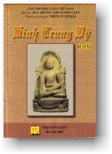

| BuddhaSasana Home Page |
Vietnamese, with Unicode Times font |
|  |
Toát yếu Kinh Trung Bộ Ni sư Thích Nữ Trí Hải tóm tắt & chú giải |
|
[10] TRUNG BỘ KINH - BÀI KINH SỐ 91 Brahmayu I. TOÁT YẾU Brahmàyu Sutta- Brahmàyu. An old and erudite brahmin learns about the Buddha, goes to meet him, and becomes his disciples. Phạm chí Brahmàyu. Một người bà la môn già uyên bác tìm hiểu về Phật, đến gặp Ngài và trở thành đệ tử Ngài. II. TÓM TẮT Phạm chí Brahmàyu 120 tuổi, một bà la môn đạo cao đức trọng, tinh thông về đại nhân tướng [1] khi nghe tin đồn về Phật, đã phái Uttara một đệ tử thông minh trẻ tuổi đi đến hội chúng Phật để tìm hiểu về 32 tướng [2] đại nhân xem có đúng như tin đồn. Vì theo thánh điều của ông, ai đủ 32 tướng ấy thì chỉ có hai đường: một là làm vua Chuyển luân có bảy báu là xe [3], voi, ngựa, châu ngọc, phụ nữ, người hầu, và cố vấn. Hai là xuất gia thành đấng toàn giác, vén màn cho thế gian [4]. Uttara thấy được tất cả đặc tướng, chỉ trừ hai tướng là tướng lưỡi dài rộng và tướng mã âm tàng. Phật hiện thần lực [5] cho thấy hai tướng ấy. Sau bảy tháng quan sát, thanh niên về thuật lại: Thế tôn quả có đủ 32 tướng đại nhân, 1. Lòng bàn chân bằng phẳng Các uy nghi của Ngài thật toàn hảo: lúc Ngài bước đi, lúc Ngài ngồi, lúc Ngài nhận cơm nước, lúc ăn chỉ để diệt trừ cảm thọ cũ mà không khởi lên cảm thọ mới [9], lúc Ngài thuyết tùy hỷ pháp [10]... Uttara nói: Chúng con đã trông thấy tôn giả Gotama đi, thấy tôn giả đứng, thấy tôn giả ngồi, thấy tôn giả ăn xong ngồi im lặng, thấy tôn giả im lặng đi đến tu viện giảng Pháp. Tôn giả Gotama là như vậy, như vậy là tôn giả Gotama, như vậy và còn nhiều hơn vậy nữa [11]. Nghe xong Brahmayu đích thân đến nơi Phật. Ông đã thấy tất cả đại nhân tướng, chỉ trừ hai tướng: tướng mã âm tàng và tướng lưỡi dài rộng. Phật biết ông có thể chứng quả Bất hoàn, nên hiện thần lực cho ông thấy đủ 32 tướng. Ông hỏi Phật ý nghĩa của: Bà la môn, thông Vệ đà [12], ba minh, cát tường, ứng cúng, viên mãn, mâu ni, Phật đà. Phật trả lời Phật [13] là thắng tri điều cần phải thắng tri, tu tập những gì cần tu tập, đoạn trừ những gì cần đoạn trừ [14] Và Ngài tóm thâu sự trả lời bằng bài kệ: Ai biết được đời trước, Bà la môn nghe xong đảnh lễ xưng tên và hôn chân Phật. Ngài thuyết pháp tuần tự [16] cho ông về bố thí, về cõi trời, về sự nguy hiểm của 5 dục và lợi ích của xuất ly. Khi tâm ông đã thuần thục, Ngài giảng tứ đế. Pháp nhãn khởi lên nơi ông: Cái gì có tập khởi đều đoạn diệt. Ông chứng ngộ Pháp, nghi hoặc được tiêu trừ. Ông thỉnh Phật hôm sau đến thọ trai. Bảy ngày sau, ông từ trần. Phật tuyên bố ông đã đoạn năm hạ phần kết sử, và hóa sinh vào cõi Tịnh cư không còn trở lui đời này. III. CHÚ GIẢI 1. Các tướng đại nhân là một học thuật căn cứ trên 12.000 tác phẩm giải thích những đặc điểm của các bậc vĩ nhân như Phật, Ðộc giác, đại đệ tử, vua chuyển luân… Những tác phẩm này bao gồm 16.000 bài kệ gọi là Mật điểm về bậc giác ngộ. 2. 32 tướng hảo đề cập trong kinh này được nói đến trong toàn thể kinh Trường Bộ số 30 tên là Kinh Tướng. Mỗi tướng này được kinh giải thích là quả báo của một đức hạnh mà Phật đã viên mãn trong thời gian còn làm Bồ Tát. 3. Bảy báu được đề cập trong kinh Trung Bộ 129. Xe báu là lý do vị vua ấy được gọi là chuyển luân vương. 4. Thế gian này bị vây phủ trong bóng tối phiền não, được che bằng 7 lớp màu: tham, sân, si, mạn, nghi, kiến và hành động vô luân. Sau khi đã tẩy trừ những lớp màn này, Phật tỏa ánh sáng cùng khắp. 5. Kinh sớ nói: Phật hiện thần thông này vì biết rõ thầy của thanh niên có thể chứng Bất Hoàn nếu thanh niên này hết nghi. 6. Bảy thân phần gồm có phần lưng của bốn tay chân, hai vai và thân mình. 7. Tướng kinh (Trường bộ kinh 30) diễn như sau: "bất cứ vị gì mà đầu lưỡi của Ngài tiếp xúc, Ngài thưởng thức được nó trong cổ họng, và vị ấy tỏa ra khắp nơi". Nhưng thật khó hiểu được làm thế nào đặt tướng này lại có thể được xem như một tướng trên cơ thể, và làm sao người khác thấy được. 8. Tướng này giải thích tại sao đỉnh đầu Phật nhô ra thành nhục kế ở trên đỉnh các tượng Phật. 9. Ðây là cách tư duy khi dùng đồ ăn khất thực, như trong kinh Trung bộ số 2. 10. Tùy hỷ pháp là một pháp thoại ngắn sau bữa ăn để giáo giới các thí chủ về một vài khía cạnh của pháp và bày tỏ lời cầu nguyện nghiệp phước của họ sẽ đem lại cho họ nhiều quả báo. 11. Câu này có ý nói: những đức tính mà tôi không mô tả là còn nhiều hơn cả những đức tính mà tôi đã mô tả. Những đức tính vi diệu của đức Ðạo sư giống như đại địa, đại hải. Nếu nói chi tiết thì thật vô lượng vô biên như hư không. 12. Vedagù, tevijja, sotthiya - thông Vệ đà, ba minh, cát tường - Ba danh từ này tiêu biểu hạng bà la môn lý tưởng; xem thêm kinh Trung bộ 39. Danh từ thứ 6 kevali viên mãn, và thứ 7 muni mâu ni có lẽ là những hạng người lý tưởng trong chúng khổ hạnh không thuộc bà la môn giáo. Với câu trả lời của Ngài, Phật gán cho những danh từ này những ý nghĩa mới, phát xuất từ hệ thống tu tập của Phật giáo. 13. Ở đây và trong câu trả lời, danh từ Phật chỉ có nghĩa là một người đã tỉnh thức, giác ngộ, trong ý nghĩa một vị A la hán. 14. Pháp cần phải thắng tri là Tứ diệu đế, cần phải tu tập là Thánh đạo Tám Ngành, cần phải từ bỏ là các ô nhiễm tham sân si. Ở đây cần phải hiểu danh từ Phật với nghĩa đặc biệt là đấng Toàn Giác. 15. Kinh sớ giải thích câu trả lời của Phật bao gồm cả 8 câu hỏi của bà la môn. 16. Như kinh Trung Bộ 56. IV. PHÁP SỐ 3 thọ, 5 hạ kết sử, 32 đại nhân tướng. V. KỆ TỤNG Phạm chí Brahamàyu -ooOoo- TRUNG BỘ KINH - BÀI KINH SỐ 92 Sela [1]I. TOÁT YẾU Sela Sutta - To Sela. The brahmin Sela questions the Buddha, gains faith in him, and becomes a monk along with his company of pupils. Giảng cho Sela. Bà la môn Sela hỏi Phật, đạt được đức tin nơi Ngài và trở thành một tỳ kheo theo đoàn đệ tử Phật. II. TÓM TẮT Bà la môn Sela đi đến nhà bện tóc Keniya thấy nhà cửa được trang hoàng, liền hỏi nguyên do và được trả lời là chuẩn bị đón tiếp Phật. Nghe âm thanh này, Sela chấn động tâm can, liền hỏi Keniya chỗ Phật đang trú và đưa đồ chúng đến yết kiến Phật. Ông quan sát thấy nơi Ngài có đủ các đặc tướng của một bậc giác ngộ, nên đọc kệ khen ngợi: Đối với người khéo sinh Ông hỏi phải chăng Ngài là bậc Chánh đẳng giác. Phật xác nhận với bài kệ: Cần biết, ta đã biết Sela cùng đồ chúng xin xuất gia dưới sự lãnh đạo của Thế tôn, được thọ đại giới và cuối cùng họ đều đắc quả A la hán. III. CHÚ GIẢI 1. Bản kinh này không gồm trong kinh Trung bộ bản in của hội Văn bản Pali PTS, vì kinh này trùng với kinh cùng tên trong kinh Tiểu bộ. 2. Diêm phù đề là tiểu lục địa Ấn Độ. 3. Các bài kệ số 4, 5, 6, 8 trong phần Kệ tụng dưới đây rút từ nguyên bản dịch của HT Minh Châu. IV. PHÁP SỐ 32 đại nhân tướng. V. KỆ TỤNG Bà la môn Sela -ooOoo- TRUNG BỘ KINH - BÀI KINH SỐ 93 Assalayana I. TOÁT YẾU Assalayana Sutta - To Assalàyana. A young brahmin approaches the Buddha to argue the thesis that the Brahmins are the highest caste. Giảng cho Assalayana. Một thanh niên bà la môn đến Phật tranh luận đề tài giai cấp bà la môn là cao nhất. II. TÓM TẮT Một số đông bà la môn từ khắp nơi có việc đến thành Xá vệ, nơi Phật đang trú. Họ đề cử Assalayana trẻ tuổi, đầu cạo trọc, thông minh, có tài biện bác, tinh thông ba tập Veda, đến tranh luận với Phật vì Ngài chủ trương sự thanh tịnh của bốn giai cấp [1]. Ba lần thanh niên từ chối, bảo Gotama là vị nói đúng pháp, rất khó tranh luận bại Ngài. Nhưng đại chúng bà la môn nói thanh niên đã sống đời tu hành ẩn sĩ [2], nên có thể thảo luận với Phật. Cuối cùng đã làm theo yêu cầu của họ. Thanh niên đến Phật, mở đầu với lời tuyên bố của bà la môn: Chỉ có bà la môn là con chính thống sinh ra từ miệng Phạm thiên, và hỏi ý kiến Phật về quan điểm ấy. Phật phản bác với những luận cứ: 1. Các nữ bà la môn cũng có kinh nguyệt, mang thai và cho con bú như tất cả phụ nữ thuộc mọi giai cấp; các người bà la môn cũng sinh ra từ nữ căn như tất cả mọi người [3]. 2. Tại hai miền Yona và Kamboja [4] biên địa của Ấn độ, chỉ có hai giai cấp là chủ và tới, người hết làm chủ thì làm tớ, và cũng có người ngược lại, sau khi làm tớ lại trở thành chủ. 3. Người thuộc cả 4 giai cấp phạm 10 ác nghiệp [5] khi chết đều đọa vào cõi dữ: bình đẳng trên phương diện chịu ác báo. 4. Người bất cứ giai cấp nào, mà từ bỏ 10 ác làm 10 lành thì khi thân hoại mạng chung cũng đều được sinh vào thiện thú, cõi trời. 5. Cả 4 giai cấp đều có thể tu tập tâm từ không sân hận, chứ không riêng gì giai cấp bà la môn mới tu được: bình đẳng trên phương diện tu tập. 6. Cả 4 giai cấp đều có thể xuống sông tắm rửa tẩy sạch bụi bặm. 7. Ngọn lửa do người Bà la môn đốt bằng gỗ thơm, với lửa do các giai cấp khác đốt với gỗ tồi, đều có thể cháy sáng và có tác dụng như nhau. 8. Trong hôn phối, con của một người bà la môn kết hôn với một người thuộc giai cấp khác sẽ giống cả cha lẫn mẹ, thuộc cả hai dòng máu. 9. Nếu có hai anh em cùng mẹ khác cha, một người thông hiểu thánh điển, một người không thông, các bà la môn sẽ cúng dường tôn trọng người thông hiểu thánh điển, không kể dòng họ. 10. Giữa hai người, một thông thánh điển nhưng không hành thiện pháp, một người có hành thiện pháp mà không thông thánh điển, người bà la môn sẽ tôn trọng người có thực hành thiện pháp. Phật kết luận: trước hết thanh niên bà la môn chủ trương sanh chủng, sau lại bỏ sanh chủng theo thánh điển, và cuối cùng bỏ luôn cả thánh điển mà công nhận sự bình đẳng của 4 giai cấp do Phật chủ trương. Phật kể lại câu chuyện quá khứ, lúc 7 ẩn sĩ bà la môn bàn luận về sự ưu thắng của giai cấp mình, bị Asita Devala [6] khiêu khích nên họ trù ếm cho Asita thành tro tàn hạ liệt. Nhưng càng trù ếm, Asita càng đẹp ra. Bảy ẩn sĩ Bà la môn buồn rầu nghĩ rằng phạm hạnh và chú thuật của mình đã trở thành vô hiệu; nhưng Asita bảo không phải thế, chỉ cần từ bỏ tâm oán hận đối với Asita. Bảy ẩy sĩ nghe danh Asita Devala liền đảnh lễ. Rồi Asita bác bỏ quan điểm ưu thắng của giai cấp Bà la môn với hai luận cứ: 1. Bà la môn không phải thuần chủng vì trong quá khứ, có những nam nữ bà la môn kết hôn với những người thuộc giai cấp khác. 2. Khi cha mẹ giao hợp, phải có hương ấm của người thì bào thai mới thành [7]. Nhưng không thể biết được hương ấm của một người lúc nhập thai là thuộc giai cấp nào. Do vậy, chính các tôn giả ấy cũng không tự biết mình là ai. Kể xong chuyện, Phật bảo thanh niên Assalayana: Bảy ẩn sĩ Bà la môn xưa bị ẩn sĩ Asita Devala chất vấn về sanh chủng còn không ứng đáp được, thì làm sao ngày nay thanh niên lại có thể ứng đáp với Ngài. Thanh niên tán thán Phật và xin Phật nhận y làm đệ tử, từ nay đến mạng chung sẽ trọn đời quy ngưỡng. III. CHÚ GIẢI 1. Lý luận bênh vực lập trường này được đưa ra trong kinh 90. 2. Họ ngụ ý: Thanh niên học xong 3 tập Vệ Ðà và các chú thuật thì cũng như những người xuất gia. Bởi thế y sẽ không bị luận bại, mà sẽ thắng. 3. Câu này muốn nói rằng người bà la môn cũng do phụ nữ sinh ra như những người khác, cho nên lời tuyên bố của họ rằng họ sinh ra từ miệng Phạm Thiên là vô lý. 4. Kamboja là một miền đất ở Ấn độ về phía bắc xứ trung ương. 5. Lý luận ở đoạn này hoàn toàn giống với lý luận trong kinh số 84. 6. Theo kinh sớ, Asita Devala là tiền thân Phật. Phật muốn hiển thị: trong quá khứ, người thuộc chủng tính cao hơn ta, nhưng người đã không trả lời được chất vấn của ta về chủng tính. Vậy thì làm sao bây giờ người có thể chất vấn ta được khi ta đã thành Phật? 7. Giống như kinh số 38. IV. PHÁP SỐ 4 giai cấp, 10 bất thiện, 10 thiện, 4 phạm trú. V. KỆ TỤNG Thanh niên bà la môn -ooOoo- TRUNG BỘ KINH - BÀI KINH SỐ 94 Ghotamukha I. TOÁT YẾU Ghotamukha Sutta - To Ghotamukha. A discussion between a brahmin and a bhikkhu on whether the renunciate life accords with the Dhamma. Giảng cho Ghotamukha. Một cuộc luận đàm giữa bà la môn và tỳ kheo về vấn đề: đời sống viễn ly có hợp chính pháp không. II. TÓM TẮT Trong lúc tôn giả Udena đang kinh hành trong vườn xoài nơi Ngài cư trú, Bà la môn đi đến chào hỏi tôn giả rồi nói: Không có sự xuất gia đúng pháp, vì không thấy ai được như tôn giả (có ý chê bai người xuất gia nói chung). Tôn giả bước khỏi đường kinh hành để vào trú xứ, ngồi vào chỗ [1]. Bà la môn cũng theo vào. Udena trước hết kể ra 4 hạng người: tự hành khổ, hành khổ người, hành khổ cả hai, và không tự hành khổ cũng không làm khổ người. Bà la môn chỉ thích ý hạng thứ tư, như kinh 52, Kandaraka. Rồi tôn giả nói có hai hội chúng: hạng có tham dục, tìm cầu vợ con châu báu … và không tham dục, tức không có những việc này. Rồi Ngài hỏi bà la môn hạng người mà ông thích ý có mặt trong hội chúng nào. Bà la môn đáp hạng ấy có mặt ở trong hội chúng không tham châu báu, đồ trang sức, từ bỏ vợ con … Khi ấy bà la môn công nhận mình đã tự mâu thuẫn với lời nói trước, và xin tôn giả giải thích về 4 hạng người. Tôn giả giải thích như trong kinh 52. Bà la môn nghe xong, xin quy y tôn giả, nhưng tôn giả khuyên hãy quy y Phật lúc ấy đã nhập niết bàn. Bà la môn xin cúng dường tôn giả 500 kahapana [2] nhưng Ngài không nhận, bà la môn xin cúng một tinh xá, nhưng tôn giả khuyên hãy cúng giảng đường cho tăng. Bà la môn làm theo, cho xây một giảng đường cúng chư tăng ở Ba liên phất [3], nay vẫn còn giảng đường mang tên ông. III. CHÚ GIẢI 1. Kinh sớ nói: Ngài làm như vậy sau khi nhận ra rằng cần phải có một cuộc đàm luận dông dài. 2. Kahàpana là đơn vị tiền lệ thời ấy. 3. Vào những ngày cuối cùng của đời đức Phật, đô thị này hãy còn là một thành phố nhỏ tên Pataligama. Trong kinh Trường bộ 16, Phật tiên đoán tương lai nó sẽ thành môt đô thị quan trọng, và quả thật cuối cùng nó đã thành thủ đô của xứ Ma Kiệt Đà. Ngày nay là Patna, thủ đô của nước Bihar. IV. PHÁP SỐ Hai hội chúng: có tham dục và không tham dục 4 hạng người: tự hành khổ, hành khổ người … V. KỆ TỤNG Tôn giả Ưu đề na (Udena) -ooOoo- TRUNG BỘ KINH - BÀI KINH SỐ 95 Cankì [1]I. TOÁT YẾU Cankì Sutta - With Cankì. The Buddha instructs a young brahmin on the preservation of truth, the discovery of truth, and the final arrival at truth. Với Cankì. Phật giáo giới một thanh niên bà la môn về sự hộ trì chân lý, khám phá chân lý, và chứng đạt chân lý. II. TÓM TẮT Phần dẫn nhập: Khi Phật ở trong rừng Chư thiên [2] tại làng Opasàda nước Kosala, nhiều gia chủ bà la môn nghe tiếng đồn tốt đẹp về Ngài đã kéo nhau đi yết kiến. Bà la môn Cankì từ trên lầu cao trông thấy cảnh ấy, hỏi người quản gia và sau khi biết chuyện, liền sai người này đến báo với đoàn người hãy chờ, ông cũng muốn đi yết kiến Phật. Bấy giờ có một số đông bà la môn từ nhiều địa phương khác đến, nghe bà la môn Cankì đi yết kiến Phật thì can ngăn vì cho rằng không xứng đáng cho bà la môn Cankì yết kiến sa môn Cồ đàm, mà ngược lại, hãy để Cồ đàm yết kiến bà la môn Cankì, vì Cankì có dòng họ cao quý, giàu có, thông ba tập Vệ đà với 5 yếu tố: danh nghĩa, lễ nghi, ngữ nguyên, chú giải, lịch sử truyền thống; lại đẹp trai, khả ái, có giới hạnh; được vua chúa kính nể, được bà la môn Pokkarasati [3] kính nể. Cankì cũng đưa ra những lý do ông phải đi yết kiến Phật: Sa môn Gotama là bậc thiện sanh từ phụ hệ và mẫu hệ; Ngài đã từ bỏ rất nhiều vàng bạc, xuất gia trong tuổi thanh xuân; Ngài là bậc tôn sư của những bậc tôn sư trong thiên hạ; Ngài đầy đủ 32 đại nhân tướng; và Ngài là khách qúy của địa phương này, nên thật xứng đáng cho Cankì đến yết kiến. Đến nơi, thấy Phật đang đàm luận với một số bà la môn trưởng thượng, và có một thanh niên bà la môn tên Kapathika thỉnh thoảng lại ngắt lời những vị này, bị Phật khiển trách, bà la môn Cankì liền can thiệp, xin tôn giả Gotama đừng khiển trách vì thanh niên này là bậc đa văn, có trí, giỏi biện luận. Phật biết được tâm ý thanh niên này muốn vấn nạn Ngài, nên để mắt đến anh ta. Phần chính: Kapathika bạch: Thưa sa môn Cồ đàm, y cứ vào các chú thuật xưa đã được khẩu truyền đến nay, các bà la môn đi đến kết luận: chỉ đây mới là sự thật, ngoài ra đều sai lầm. Ngài nói sao về điều ấy? Phật hỏi lại thanh niên: Có một người bà la môn nào, hay bậc thầy nào của Bà la môn hiện tại hay lùi về bảy đời trước, đã nói: Tôi đã biết đã thấy điều này, chỉ đây là sự thật, ngoài ra đều sai? Thanh niên đáp không có. Phật lại hỏi những nhà tụng tán và tác giả các chú thuật [4] được khẩu truyền cho đến bây giờ, có nói rằng: Tôi biết, tôi thấy điều này; chỉ đây là sự thật, ngoài ra đều sai lầm? Thanh niên cũng nói không. Khi ấy Phật dạy, vì không một người bà la môn nào trong quá khứ hay hiện tại đã thực sự thấy, biết, thì câu họ nói chỉ đây là sự thật, ngoài ra đều sai lầm, chỉ như một chuỗi người mù ôm lưng nhau, và lòng tin của họ trở thành vô căn cứ. Thanh niên bà la môn nói không phải bà la môn chỉ dựa trên lòng tin, mà còn trên sự truyền khẩu (lời đồn). Phật dạy có 5 việc mà ngay hiện tại cũng có thể đem lại hai kết quả khác nhau (nghĩa là không chắc chắn) đó là tín (tin tưởng), tùy hỷ (vui theo, đồng ý), tùy văn (nghe truyền tụng), cân nhắc suy tư các lý do, và chấp nhận quan điểm [5]. Có những điều lúc đầu được ta tin tưởng hoàn toàn, mà về sau thành trống rỗng hư vọng, ngược lại cũng có điều lúc đầu ta không tin nhưng về sau hóa ra là chân thật. Bốn việc còn lại cũng thế. Do vậy người trí tôn trọng sư thật (hộ trì chân lý) không nên đi đến kết luận: chỉ đây là sự thật, ngoài ra đều sai lầm [6]. Khi ấy thanh niên hỏi thế nào gọi là hộ trì chân lý [7], Phật dạy ấy là khi một người nói tôi tin điều này, nhưng không cả quyết chỉ đây là sự thật, ngoài ra đều sai. Với bốn việc còn lại cũng vậy, người ấy không cả quyết như trên, thì gọi là hộ trì chân lý (hay bảo vệ, tôn trọng sự thật). Nhưng như thế chưa phải là khám phá chân lý [8]. Khám phá hay chứng ngộ chân lý là, sau khi quan sát kỹ một bậc thầy [9] về thân ngữ ý hành, thấy vị ấy không còn bị tham, sân, si chi phối khiến vị ấy có thể dối gạt người khác, xúi họ đi đến tự hại, phải đau khổ lâu dài, một người khởi lòng tin, đến gần, thân cận giao thiệp, lóng tai, nghe pháp, thọ trì pháp, tìm hiểu ý nghĩa các pháp ấy, nhờ hiểu nên hoan hỉ chấp nhận, rồi khởi lên ước muốn tu tập, khi đã ước muốn thì cố gắng, sau khi cố gắng liền cân nhắc [10], sau khi cân nhắc, vị ấy tinh cần [11], nhờ tinh cần, vị ấy tự thân chứng ngộ chân lý và thể nhập chân lý với trí tuệ [12]. Nhưng thế cũng chưa phải chứng đạt chân lý [13]. Muốn chứng đạt chân lý, cần phải tu tập nhiều lần. Trong việc chứng đạt chân lý, cốt nhất là tinh cần. Muốn tinh cần, phải cân nhắc. Muốn cân nhắc phải cố gắng. Muốn cố gắng phải có ước muốn. Để có ước muốn, cần phải hoan hỉ chấp nhận. Muốn hoan hỉ chấp nhận, phải tìm hiểu ý nghĩa. Muốn tìm hiểu ý nghĩa phải thọ trì pháp. Muốn thọ trì pháp thì phải nghe pháp. Muốn nghe pháp phải lóng tai. Muốn lóng tai phải thân cận giao thiệp. Muốn thân cận giao thiệp phải đến gần. Muốn đến gần phải có lòng tin. Thanh niên bà la môn tán thán Phật đã gợi nơi anh ta lòng ái kính sa môn, và xin Phật nhận anh làm đệ tử cư sĩ, từ nay đến mạng chung trọn đời quy ngưỡng [14]. III. CHÚ GIẢI 1. Đoạn mở đầu kinh này gần giống như đoạn mở đầu kinh Trung Bộ 4, nhan đề Sonadanda sutta. 2. Theo kinh sớ, rừng này được gọi là Rừng chư thiên Devavana, vì những đồ cúng ở đấy dành để cúng chư thiên. 3. Pokkarasàti là một bà la môn giàu có khác, được Vua Ba Tư Nặc phong ấp tên Ukkatthà. Trong kinh Trường bộ 2, sau khi nghe Phật thuyết pháp, ông chứng quả Dự Lưu và đã cùng với gia đình quyến thuộc xin quy y. 4. Atthaka, Vàmaka, Vàmadeva, Vessàmitta, Yamataggi, Angirasa, Bhàradvàja, Vàsettha, Kassapa, và Bhagu là những vị ẩn sĩ mà các bà la môn xem như những người biên chép kinh Vệ Đà do Thiên khải. 5. Saddhà, ruci, anussava, àkàraparivitakka, ditthinijjhànakkhanti. Trong 5 nền tảng này để đặt đến niềm tin, 2 yếu tố đầu hoàn toàn thuộc về cảm xúc, yếu tố thứ 3 là sự chấp nhận truyền thống một cách mù quáng, và 2 yếu tố cuối cùng thuộc phạm vi suy luận nhận thức. Những thứ này đều có thể có hai cách khác nhau; cách nào cũng có thể thành đúng và sai. 6. Không thể đi đến kết luận chỉ đây là đúng, khi không tự mình thấy rõ sự thật, mà chỉ công nhận dựa trên 5 căn cứ như trên, những cơ sở không có gì chắc chắn. 7. Saccànurakkhana, hộ trì chân lý, bảo vệ sự thật. 8. Saccànubodha, khám phá, chứng ngộ chân lý. 9. Phương pháp tìm ra chân lý (tìm hiểu người nói pháp có bị còn tham, sân, si chi phối đến nỗi xúi kẻ khác tự hại, hại người không. Sau khi biết thân ngữ ý hành vị ấy không phải của kẻ bị ám vì tham sân si, thì biết Pháp do vị ấy giảng là sâu xa, được người trí chứng biết, không dễ gì do một kẻ còn tham sân si mà dạy được) theo kinh này dường như khai triển phương pháp đã được nói trong kinh số 47. 10. Tùleti. Vị ấy tra tầm các pháp theo nguyên lý vô thường, v.v… Giai đoạn này như vậy dường như là giai đoạn tuệ quán. 11. Nỗ lực ussahati, có vẻ đồng nghĩa với padahati, tinh cần, nhưng động từ trước có nghĩa là nỗ lực trước khi tuệ quán, động từ sau là nỗ lực nâng tuệ quán lên đạo lộ siêu thế. 12. Kinh sớ: vị ấy chứng Niết bàn với thân tâm lý thuộc đạo lộ Dự Lưu, và sau khi thâm nhập các cấu uế, vị ấy chứng niết bàn bằng trí tuệ, làm cho niết bàn hiển lộ. 13. Trong kinh này, sự khám phá chân lý dường như có nghĩa đắc quả Dự Lưu, sự chứng đạt chân lý dường như có nghĩa đắc quả A la hán. 14. Xem chú thích số 8 kinh 50. IV. PHÁP SỐ 3 độc tham sân si; 5 pháp không chắc chắn: tín, tùy hỉ, tùy văn, cân nhắc suy tư, chấp nhận quan điểm; 12 pháp đưa đến chứng đạt chân lý: lòng tin, đến gần, giao thiệp, lóng tai, nghe pháp, thọ trì pháp, tìm hiểu ý nghĩa, hoan hỉ chấp nhận… V. KỆ TỤNG Bà la môn Cankì -ooOoo- TRUNG BỘ KINH - BÀI KINH SỐ 96 Esukàrì I. TOÁT YẾU Esukàrì Sutta - To Esukàrì. The Buddha and a brahmin discuss the brahmin’s claim to superiority over the other castes. Giảng cho Esukàrì. Phật thảo luận với một bà la môn về lời tuyên bố giai cấp bà la môn là tối thắng hơn các giai cấp khác. II. TÓM TẮT Bà la môn Esukari hỏi ý kiến Phật về chủ trương giai cấp của Bà la môn theo đó người đồng đẳng cấp được phục vụ nhau và phục vụ người thuộc những giai cấp trên, không phục vụ người thuộc giai cấp dưới. Như giai cấp Thủ đà la phải phục vụ ba giai cấp trên, và chỉ được phục vụ bởi người cùng giai cấp. Phật hỏi lại, quan điểm đó có được mọi người đồng ý không. Bà la môn đáp không. Phật dạy vậy cũng như có người nghèo bị ép ăn một thứ họ không muốn ăn, rồi bảo họ trả tiền. Kế tiếp, Phật nói Ngài không chủ trương nên phục vụ hay không nên phục vụ, Nhưng theo Ngài, nếu do phục vụ mà người phục vụ trở thành tốt hơn, thì nên phục vụ. Nếu do phục vụ mà họ thành xấu hơn, thì không nên phục vụ. Vì nếu nói một cách chân chính, thì người thuộc bất cứ giai cấp nào cũng sẽ nói cần người nào phục vụ cho mình mà do vậy họ trở thành tốt hơn. Rồi Phật phân tích thế nào là tốt: đó không phải là sự cải thiện về dòng họ, về sắc đẹp, về tài sản, mà về năm yếu tố: lòng tin, giới, nghe nhiều, bố thí và trí tuệ. Esukari lại hỏi ý kiến Phật về chủ trương của bà la môn về tài sản: tài sản của giai cấp bà la môn là khất thực [1], của Sát đế lợi là cung tên, của Vệ xá là chăn nuôi trồng trọt [2], của Thủ đà là lao động tay chân. Nếu một giai cấp không sống đúng theo tài sản nói trên, mà làm việc khác để kiếm sống, thì đấy là không làm tròn bổn phận, là đồng nghĩa với trộm cắp. Phật hỏi lại và được trả lời như trên, là không phải mọi người đồng ý chủ trương ấy: và Phật cũng đưa ví dụ người nghèo bị ép nuốt một vật họ không ưa, lại phải trả tiền. Phật chủ trương tài sản cho con người là thánh pháp vô thượng [3], nhưng khi nhớ đến gia hệ xưa của một người về phía cha và mẹ, người ấy được kể tùy theo chỗ họ thọ sinh [4]. Do vậy người thuộc giai cấp nào cũng có thể từ bỏ 10 ác, cũng có thể tu tập mười lành, thành tựu thiện pháp, cũng có thể xuống sông tắm sạch bụi bặm, cũng có thể đốt lên ngọn lửa với nhiên liệu mà mình đang có. Tất cả giai cấp đều có thể thành tựu chánh đạo, và khi đã thành tựu thì đều được giải thoát. Cũng như ngọn lửa được đốt lên với mọi thứ củi đều có tác dụng như nhau, ánh sáng và hơi nóng chỉ là một. Bà la môn tán thán Phật và xin quy y. III. CHÚ GIẢI 1. Theo kinh sớ, những người bà la môn xưa có tục lệ đi khất thực dù họ có tài sản lớn. 2. Mặc dù nghề nông có vẻ là một công việc lạ lùng đối với một người đã được mô tả là thương gia, cần phải hiểu rằng giai cấp thương gia không những buôn bán ở đô thị mà còn sở hữu và cai quản những đầu tư về nông nghiệp. 3. Ariyam kho aham bràhmana lokuttaram dhammam pruisassa sandhanam pannàpemi. Này bà la môn, ta chủ trương tài sản dành cho con người là thánh pháp tối thượng. 4. Attabhàvassa abhinibbatti: Nghĩa đen là "Bất cứ nơi đâu vị ấy tái nhập bào thai". IV. PHÁP SỐ 3 tiêu chuẩn để lượng giá theo thế gian: dòng họ, sắc đẹp, tài sản; 4 phạm trú; 4 loại tài sản theo chủ trương giai cấp của bà la môn giáo: do khất thực, do cung tên, do buôn bán, và do sức lao động. 4 chủ trương phụng sự theo bà la môn; 4 chủ trương phụng sự của Phật theo đó người phụng sự phải tốt hơn theo thời gian; 5 tiêu chuẩn để lượng giá theo Phật: tín, giới, thí, văn, tuệ; 10 thiện nghiệp. V. KỆ TỤNG Một người Bà la môn -ooOoo- TRUNG BỘ KINH - BÀI KINH SỐ 97 Dhànanjàni I. TOÁT YẾU Dhànanjàni Sutta - To Dhànanjàni. The venerable Sàriputta admonishes a brahmin who tries to excuse his negligence by appeal to his many duties. Later, when he is close to death Sàriputta guides him to rebirth in the Brahma - world but is reprimanded by the Buddha for having done so. Giảng cho Dhànanjàni. Tôn giả Xá Lợi Phất giáo giới một bà la môn lấy cớ bận nhiều phận sự để biện minh cho sự lơ đễnh (tu học) của mình. Về sau, khi ông gần chết, Xá lợi phất hướng dẫn ông tái sinh vào cõi Phạm thiên, nhưng Ngài bị Phật quở vì đã làm như vậy. II. TÓM TẮT Tôn giả Xá Lợi Phất giáo giới bà la môn Dhananjani vì vị này sống buông thả, viện cớ còn có trách nhiệm đối với cha mẹ, vợ con, bạn bè, tôi tớ, lao công, thân hữu, bà con huyết thống, tân khách, tổ tiên, chư thiên, vua chúa, và còn cái thân này phải được chu cấp, nên không thể tu được. Tôn giả hỏi ông, một người vì những liên hệ ấy và vì cái thân mà làm điều phi pháp, bị kéo xuống địa ngục, có thể lấy cớ ấy để được khỏi tội hay không? Bà la môn nói không thể. Lại hỏi người vì những liên hệ ấy và vì cái thân mà làm điều bất chính, với người cũng vì những liên hệ ấy và vì cái thân mà làm điều đúng pháp, ai tốt đẹp hơn? Bà la môn trả lời người làm đúng pháp thì tốt đẹp hơn. Về sau, bà la môn bị bệnh sắp chết, sai người đến đảnh lễ Phật và tôn giả Xá Lợi Phất để báo tin, và xin được gặp tôn giả. Tôn giả viếng thăm ông, kể ra những cõi tái sinh từ địa ngục trở lên đến các cõi trời Tứ thiên vương, Tam thập tam, Dạ ma, Đâu suất đà, Hóa lạc, Tha hóa tự tại, và cuối cùng là Phạm thiên. Nghe đến Phạm thiên giới, bà la môn đặt biệt chú ý, Tôn giả bèn thuyết giảng cho ông con đường cộng trú với Phạm thiên, là an trú biến mãn cùng khắp mười phương tâm từ, bi, hỉ, xả. Rồi tôn giả ra đi, mặc dù còn nhiều pháp cao thượng hơn [1]. Khi biết chuyện, Phật quở trách tôn giả vì sao có những cảnh giới cao thượng hơn cần phải chứng, mà tôn giả chỉ giảng cho bà la môn một cảnh giới thấp kém. Tôn giả trả lời vì Ngài biết ông ái luyến phạm thiên giới, nên tôn giả thuyết giảng con đường đưa đến đấy. Phật cho biết bà la môn quả thực đã sinh lên Phạm thiên giới [2]. III. CHÚ GIẢI 1. Tôn giả Xá Lợi Phất đã ra về mà không giảng dạy cho ông ta một giáo lý giúp ông đạt đến đạo lộ siêu thế để trở thành một bậc định tánh giác ngộ. So với khả năng này thì sự sinh lên cõi Phạm thiên được xem là thấp kém. 2. Nhận xét này gần như một lời quở trách nhẹ nhàng. Có lẽ Phật đã thấy Dhànanjàni có khả năng đạt đến đạo lộ siêu thế, vì ở chỗ khác (như trong kinh 99) chính Ngài cũng dạy con đường lên Phạm thiên giới trong trường hợp người nghe Pháp không có khả năng chứng đắc đạo lộ siêu thế. IV. PHÁP SỐ Tam bảo, 3 nghiệp, 4 phạm trú, 5 dục tăng trưởng, 10 bất thiện nghiệp. V. KỆ TỤNG Tôn giả Xá Lợi Phất -ooOoo- TRUNG BỘ KINH - BÀI KINH SỐ 98 Vàsettha I. TOÁT YẾU Vàsettha Sutta - To Vàsettha. The Buddha resolves a dispute between two young Brahmins on the qualities of a true brahmin. Giảng cho Vàsettha. Phật giải quyết một cuộc tranh cãi giữa hai thanh niên bà la môn về những đức tính của một bà la môn chân chính. II. TÓM TẮT Hai thanh niên bà la môn Bharadvaja và Vasettha tranh luận về đề tài thế nào là một bà la môn. Người thì cho là do huyết thống, người thì cho là do hành động hiện tại. Họ đưa vấn đề đến xin Phật giải quyết. Trước hết Phật đưa ra sự khác nhau giữa loài vật và con người. Trong khi loài vật có chủng loại khác nhau rõ rệt do tướng thọ sanh, có muôn màu muôn vẻ như noãn thai thấp hóa và lớn nhỏ, không chân, hai chân hay nhiều chân… thì con người, tướng thọ sanh không có gì sai khác. Bởi thế, sự khác nhau chỉ là do danh xưng, do nghề nghiệp hiện tại của mỗi hạng người. Ngang đây, Phật gần như đồng ý với thanh niên Vasettha chủ trương bà la môn là do hành động, do giới hạnh. Nhưng sau đó, Ngài gán cho danh từ bà la môn một định nghĩa cao thượng hơn, đồng hóa bà la môn với bậc A la hán mẫu người lý tưởng trong đạo Phật, là bậc đã giải thoát khỏi hữu, chứng ba minh và dứt sạch lậu hoặc. III. CHÚ GIẢI 1. Bản kinh này không nằm trong Trung bộ kinh ấn bản của Hội Văn bản Pali, vì lý do như đã nói trong chú thích 1, kinh 92. 2. Ở đây danh từ hành động cần hiểu là hành vi hiện tại, chứ không phải hành vi quá khứ hay nghiệp sản sinh ra những hậu quả trong hiện tại. 3. Sàmannà. Theo kinh sớ, sự khác nhau về hình dạng các thân phần nơi súc vật là do chủng loại - yoni - của chúng. Nhưng sự phân biệt chủng loại như vậy không có nơi thân thể của bà la môn và các chủng tính khác. Vì lý do ấy, sự phân biệt giai cấp bà la môn, sát đế lợi, vân vân, chỉ thuần là phân biệt trên danh từ; một thành ngữ theo quy ước mà thôi, không tương ứng với thực tại. 4. Từ trước đến đây, Phật đã phê phán lời xác nhận của Bhàradvàja rằng sanh chủng làm cho người ta là một bà la môn. Bây giờ, Ngài sẽ đề cao lời xác nhận của Vàsettha rằng chính hành động hay nghiệp, khiến người ta thành bà la môn. Vì ngày xưa những người bà la môn và các bậc hiền trí trên đời không chấp nhận sự kiện một bà la môn mà có cách sinh nhai bất đáng, có giới hạnh và tư cách khiếm khuyết. 5. Bhovàdi. Bho, Ngài, là cách xưng hô giữa những người bà la môn. Từ đây trở đi, Phật đồng nhất vị bà la môn chân chính với bậc A la hán. Những câu kệ ở đây giống Pháp cú 396-423, trừ trong Pháp cú 423 có thêm hai câu. 6. Kinh sớ: Do ý hành hiện tại muốn hoàn tất công việc đồng áng, vv.. 7. Với câu kệ này, danh từ nghiệp có hơi thay đổi ý nghĩa do từ ngữ duyên sinh. Nghiệp ở đây không còn có nghĩa hành động hiện tại định đoạt quy chế xã hội của một người, mà hành động với ý nghĩa đặc biệt là một năng lực trói buộc hữu tình vào vòng hiện hữu. Dòng tư tưởng này còn rõ rệt hơn nữa trong bài kệ kế tiếp. 8. Bài kệ này và tiếp theo lại nói đến bậc A la hán. Nhưng ở đây, sự tương phản không phải là giữa vị A la hán trở nên thánh thiện do hành động của mình với người sanh chủng bà la môn nhưng không xứng với danh hiệu bà la môn; mà là giữa vị A la hán kể như một người đã giải thoát sự trói buộc của hành động và quả báo, với tất cả chúng sinh khác còn bị trói buột vào bánh xe sinh tử bởi những hành nghiệp của mình. IV. PHÁP SỐ 3 lậu hoặc, 3 nghiệp, 4 giai cấp, 5 triền cái. V. KỆ TỤNG Thanh niên Vasettha (Hầu hết toàn bài rút từ bản dịch của Hòa thượng Minh Châu, trừ bài cuối theo bản Anh dịch.) -ooOoo- TRUNG BỘ KINH - BÀI KINH SỐ 99 Subha I. TOÁT YẾU Subha Sutta - To Subha. The Buddha answers a young Brahmin’s questions and teaches him the way to rebirth in the Brahma - world. Giảng cho Tư Bạt. Phật trả lời những câu hỏi của một bà la môn trẻ và dạy cho anh ta con đường tái sinh lên Phạm thiên giới. II. TÓM TẮT Bà la môn Subha Todeyyaputta [1] trình bày với Phật chủ trương của các bà la môn rằng chính người tại gia thành tựu chánh đạo, thiện pháp, xuất gia không thành tựu. Do vì tại gia có nhiều dịch vụ, công tác, tổ chức, lao lực, nên có quả báo lớn. Còn xuất gia ít dịch vụ, công tác, ít tổ chức, lao lực, nên quả báo nhỏ. Phật dạy Ngài chủ trương cần phải phân tích [2], không thể nói một chiều. Và Ngài phân tích có 4 trường hợp: (1) Dịch vụ lớn, công tác lớn, tổ chức lớn, lao lực lớn, nếu làm hỏng, kết quả nhỏ (2) Dịch vụ lớn ... tổ chức lớn, nếu làm đúng, kết quả lớn (3) Dịch vụ nhỏ ... tổ chức nhỏ, làm hỏng, sẽ có kết quả nhỏ (4) Dịch vụ nhỏ ... tổ chức nhỏ, làm thành tựu, sẽ có quả báo lớn Hai trường hợp đầu là nông nghiệp, hai trường hợp sau là buôn bán [3]. Kế tiếp bà la môn đưa ra năm pháp tác phước đắc thiện mà họ chủ trương, là Chân thực, khổ hạnh, phạm hạnh, tụng đọc và thí xả . Phật hỏi trong số những người bà la môn hiện tại và quá khứ, có ai tuyên bố họ đã chứng ngộ với thượng trí, quả báo dị thục của năm pháp ấy? Thanh niên trả lời không. Phật dạy vậy cũng như một chuỗi người mù ôm lưng nhau, người đầu, người giữa và người cuối đều không thấy [4]. Thanh niên bà la môn bất mãn vì bị nói như vậy, bèn dẫn lời Pokkharasati, một bà la môn danh tiếng nói rằng [5] có một số sa môn bà la môn tự cho đã chứng pháp thượng nhân, thật sự thấy chỉ là lời trống rỗng, vì làm sao còn là người lại chứng được pháp vượt con người? Phật hỏi lại, bà la môn ấy có tha tâm thông, biết tâm tư của tất cả sa môn bà la môn khác không. Thanh niên đáp tâm người tớ gái ông ta còn không biết, làm sao có thể biết tâm tất cả sa môn bà la môn? Phật dạy ví như người mù tuyên bố không có các hình sắc, vì anh ta không thấy biết chúng, lời ấy đúng không. Rồi Ngài khiến thanh niên phải xác nhận bốn tiêu chuẩn của lời nói tốt đẹp là: được thế tục chấp nhận, cần phải được suy tư, cần phân tích cân nhắc, và liên hệ đến mục đích. Thanh niên công nhận lời tuyên bố trên của các bà la môn hoàn toàn thiếu bốn tiêu chuẩn ấy. Kế tiếp Phật nêu lên 5 triền cái và 5 dục, bà la môn Pokkharasati đã bị chúng ngăn che và trói buộc nên không chứng được thượng nhân pháp. Ngài lại đề cập hỷ lạc do thiền định ly dục bất thiện pháp như là ngọn lửa đốt lên không nhờ các nhiên liệu thông thường. Ngài hỏi thanh niên 5 pháp tác phước đắc thiện có nhiều hơn ở người tại gia hay người xuất gia, thanh niên bà la môn nói ở xuất gia. Phật dạy 5 pháp ấy là những tư cụ của tâm, để tu tập không sân hận. Cuối cùng Ngài giảng con đường cộng trú với Phạm thiên [6] là biến mãn khắp mười phương với tâm từ, bi, hỷ, xả, không có hạn lượng [7], còn gọi bốn phạm trú. Thanh niên tán thán Phật và xin quy y. III. CHÚ GIẢI 1. Subha Todeyyaputta là một bà la môn giàu có, thống lĩnh một khu làng Tudigama gần thành Xá vệ. Kinh 135 cũng được giảng cho ông Tư Bạt này. 2. Vibhajjavàdo kho aham ettha. Những lời nói như vậy giải thích tại sao về sau đạo Phật được gọi là vibhajjavàda, Tỳ bà sa luận hay lý thuyết phân tích. 3. Rõ ràng vào thời ấy, thương mãi còn ở giai đoạn sơ khai. Ngày nay tuyệt nhiên không còn có thể nói như vậy. 4. Như trong kinh 95. 5. Lời này có lẽ đã được nói trước khi Pokkharasati trở thành đệ tử Phật, như được nói trong kinh 95. 6. Trí này thuộc về Như Lai lực thứ ba, biết đường đến các cảnh giới. Xem kinh số 12. 7. Theo kinh sớ, nghiệp hữu hạn là nghiệp thuộc dục giới; ngược với nghiệp vô hạn là các thiền thuộc sắc hoặc vô sắc giới. Ở đây muốn nói đến các phạm trú được tu tập như một pháp môn thiền. Khi chứng đắc và làm chủ một thiền thuộc vô sắc hay vô sắc giới thì một nghiệp thuộc dục giới không thể thắng lướt nó và có được cơ hội phát sinh hậu quả. Vì ngăn chặn được hậu quả của các nghiệp thuộc dục giới, phạm trú mà hành giả đã chủ động được, sẽ đưa vị ấy tái sinh cộng trú với Phạm thiên. IV. PHÁP SỐ 4 phạm trú; 4 lý do tại gia có nhiều phước đức theo chủ trương của bà la môn; 4 sự phân tích theo Phật. 5 pháp tác phước đắc thiện của bà la môn; 5 triền cái, 5 dục tăng trưởng. V. KỆ TỤNG Bà la môn Subha -ooOoo- TRUNG BỘ KINH - BÀI KINH SỐ 100 Sangàrava I. TOÁT YẾU Sangàrava Sutta - To Sangàrava. A brahmin student questions the Buddha about the basis on which he teaches the fundamentals of the holy life. Giảng cho Sangàrava. Một thanh niên bà la môn hỏi Phật về nền tảng dựa trên đó Ngài giảng dạy những điều căn bản của đời sống phạm hạnh. II. TÓM TẮT Nữ bà la môn Dhananjani [1] sùng tín Phật, Pháp, Tăng, mỗi khi trượt chân bà lại thốt lên lời tán thán ba ngôi báu. Sangàrava lúc đầu chỉ trích bà, nhưng sau theo lời khuyên, đến yết kiến Phật và hỏi: có một số sa môn, bà la môn cũng tự nhận (giảng dạy) căn bản phạm hạnh sau khi đã chứng đạt ngay hiện tại [2] cứu cánh bỉ ngạn nhờ thượng trí, vậy Ngài là thế nào giữa các vị ấy. Phật dạy có ba hạng, hạng 1 do truyền thống, họ tự nhận đã đắc đạo; như các bà la môn thông hiểu ba tập Vệ đà. Hạng 2 do tin tưởng, như các nhà lý luận và tra tầm [3]. Hạng 3 tự mình hoàn toàn chứng tri [4] những gì trước đấy chưa từng nghe; như Phật. Và Phật thuật lại quá trình tu chứng của Ngài từ khi còn tại gia cho đến khi tìm ra con đường trung đạo tránh hai cực đoan hưởng lạc và ép xác, ngồi thiền đạt giác ngộ. III. CHÚ GIẢI 1. Dhànanjànì là một bậc Dự lưu. Theo kinh sớ, Sangàrava là em trai của chồng bà. 2. Ditthadhammàbhinnàvosànapàramippatt àdibrahmacariyam patijànanti. Kinh sớ chú: Họ tự cho là những người sáng tạo, khai sáng, phát sinh một đời phạm hạnh, nói: Sau khi biết và thấy ngay trong đời hiện tại, sau khi đạt dến tột đỉnh, chúng tôi đã đạt niết bàn gọi là hoàn toàn vì vượt trên tất cả. 3. Điều khó hiểu là những người lý luận tra tầm (takkì, vìmamsì) ở đây được nói là dựa trên căn bản của đức tin thuần túy - saddhamattakena. Chỗ khác thì tin và lý luận tương phản như hai nền tảng khác nhau của sự xác tín (Trung 95), và chỉ đức tin mà thôi thì rất gần với sự căn cứ vào truyền khẩu, hơn là với lý luận và tra tầm. 4. Sàmam yea dhammam abhinnàya. Câu này nhấn mạnh sự thân chứng kể như nền tảng để công bố đời sống phạm hạnh. IV. PHÁP SỐ 3 hạng người tự công bố đã chứng thượng trí: hạng nghe nhiều, hạng tín tưởng và hạng thân chứng. V. KỆ TỤNG Một nữ bà la môn -ooOoo- Đầu trang | 00 | 01 | 02 | 03 | 04 | 05 | 06 | 07 | 08 | 09 | 10 | 11 | 12 | 13 | 14 | 15 |
Source: Trang web Diệu Pháp, http://www.dieuphap.net
[Trích giảng Trung Bộ][Trở về trang Thư Mục]
last updated: 28-01-2005